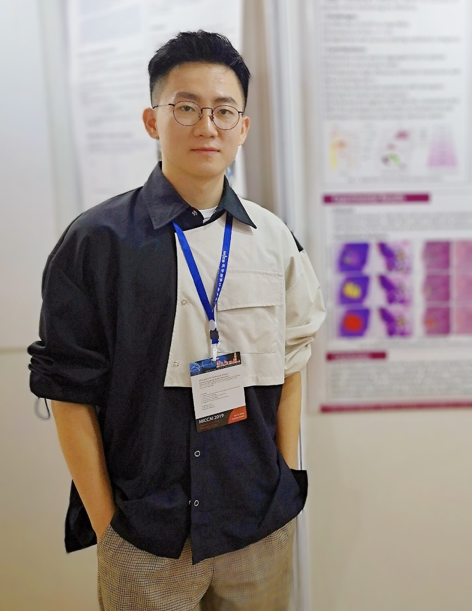
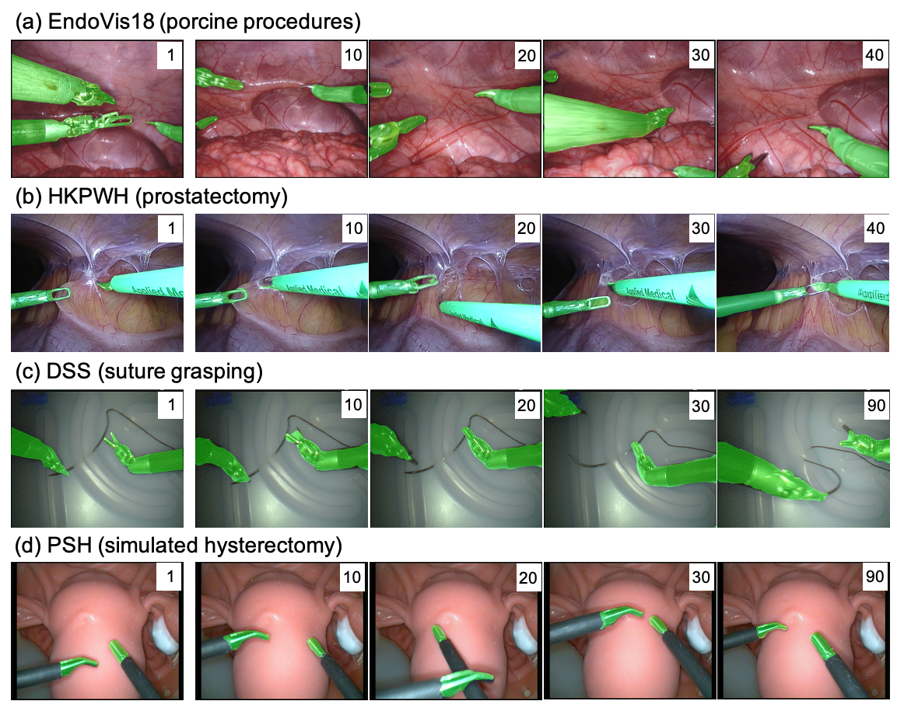
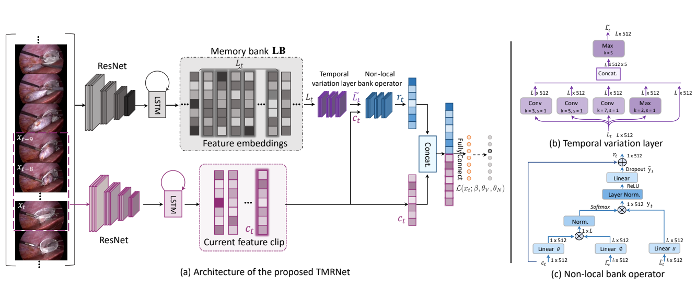
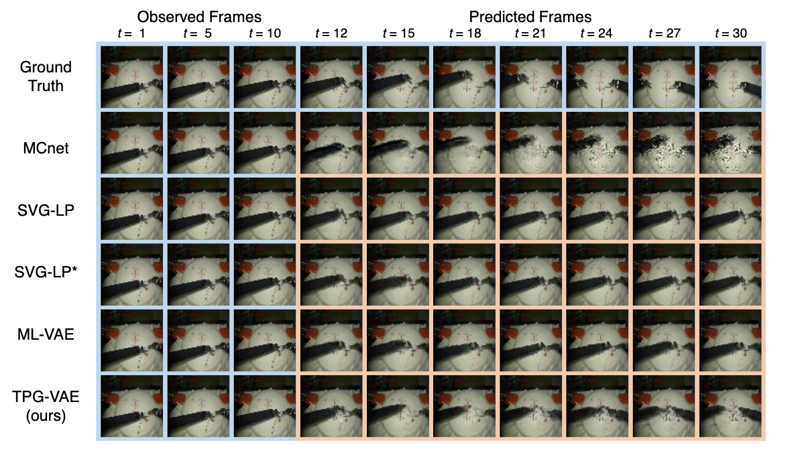
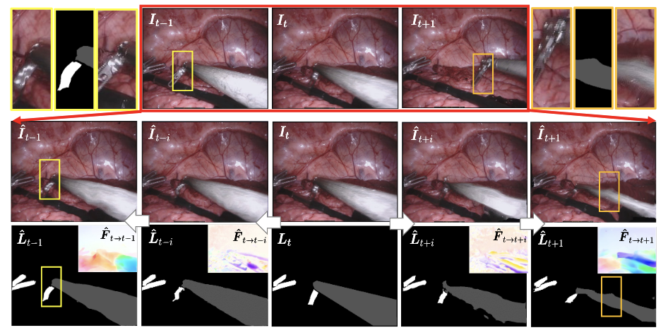
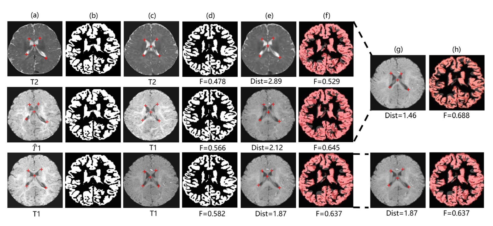

Zixu ZhaoPh.D. Student
Rm 1024, Ho Sin-Hang Engineering Building |
 |


Biography
I am a third-year PhD student in MiuLar Lab in Department of Computer Science and Engineering, The Chinese University of Hong Kong, supervised by Prof. Pheng-Ann Heng. Before that, I did research in MSRA, supervised by Prof. Xu Yan, for one year. Previously, I received the BEng degree in Electronic and Information Engineering from Beihang University, Beijing, in 2017. I also received the BMgmt degree in Business Administration from Beihang University at the same time.
My research interests include artificial intelligence and its applications on robotic video perception and medical image computing.
News
- [03/2021] One paper accepted to ICRA 2021. One paper accepted to IPMI 2021.
- [04/2020] I passed my PhD qualify exam.
- [11/2019] I ended my research internship in Imsight Technology Co., Ltd, Hong Kong.
- [10/2019] Our team ranked 5th in 2019 MICCAI PAIP Liver Cancer Segmentation Challenge.
Selected Publications [Google Scholar]
|  | One to Many: Adaptive Instrument Segmentation via Meta Learning and Dynamic Online Adaptation in Robotic Surgical Video. Zixu Zhao, Yueming Jin, Bo Lu, Chi-Fai Ng, Qi Dou, Pheng-Ann Heng. IEEE International Conference on Robotics and Automation (ICRA), 2021. |
|  | Temporal Memory Relation Network for Workflow Recognition from Surgical Video. Yueming Jin, Yonghao Long, Cheng Chen, Zixu Zhao, Qi Dou, Pheng-Ann Heng. IEEE Transactions on Medical Imaging (TMI), 2021.
|
|  | Future Frame Prediction for Robot-assisted Surgery. Xiaojie Gao, Yueming Jin, Zixu Zhao, Qi Dou, Pheng-Ann Heng. Information Processing in Medical Imaging (IPMI), 2021. (Oral) [paper] |
|  | Learning Motion Flows for Semi-supervised Instrument Segmentation from Robotic Surgical Video. Zixu Zhao, Yueming Jin, Xiaojie Gao, Qi Dou, Pheng-Ann Heng. Medical Image Computing and Computer Assisted Intervention (MICCAI), 2020. |
|  | MRI Cross-Modality Image-to-Image Translation. Qianye Yang*, Nannan Li*, Zixu Zhao*, Xingyu Fan, Eric I-Chao Chang, Yan Xu. Scientific Reports, 2020. [paper] |

|
PFA-ScanNet: Pyramidal Feature Aggregation with Synergistic Learning for Breast Cancer Metastasis Analysis. Zixu Zhao, HuangJing Lin, Hao Chen, Pheng-Ann Heng. Medical Image Computing and Computer Assisted Intervention (MICCAI), 2019. [paper] |
Honors & Awards
| Postgraduate Scholarship in Hong kong, 2018-2022 |
| Teaching Assistant of Merit, 2019 |
| Outstanding Graduates of Beijing, 2017 |
| National Scholarship in China, 2016 |
| Huawei Scholarship, 2015 |
Teaching
| 2020-2021 | Spring | CENG3410 Smart Hardware Design |
| 2019-2020 | Spring | CENG3410 Smart Hardware Design |
| 2019-2020 | Fall | CSCI1510 Computer Principle and C Programming |
| 2018-2019 | Spring | CENG3410 Smart Hardware Design |
| 2018-2019 | Fall | ENGG2440A Discrete Mathematics |

© Zixu Zhao | Last updated: March 2021